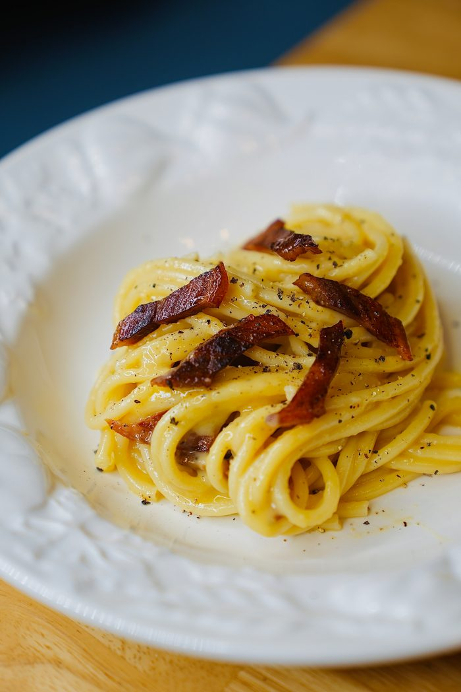

Pasta Carbonara
Credit to: ScheckEats

Description
This is easily on of my favorite dishes to make! Carbonara has such
a unique flavor, it is truly unlike any pasta I've had before. The
only caveat to this recipe, is that it includes raw egg, therefore
if you are looking for something that can be coverted to leftovers
this may not be the best choice. But for a quick solo meal or dish
to serve at a dinner party, this is perfect; delicious, little cle-
an-up and no leftovers!
Ingredients
- Pinch of salt for the water
- 4.5oz (125g) guanciale, pancetta, or bacon (cut into thin batons)
- 2 egg yolks
- 1 whole egg
- 3 oz (80g) freshly grated pecorino romano cheese
- Freshly ground black pepper
- 1/2 pound (225g) bucatini or spaghetti
Steps
- Lightly season pasta water in a large pot and begin heating.
- Meanwhile, in a nearby pan (do not preheat), add the guanciale pieces. Let the guanciale cook on low heat 10-15 minutes (moving around if needed), or until it's red and crispy, and the fat has rendered out.
- While waiting for the water to boil and the guanciale to cook, whisk together the egg, 2 egg yolks, and pecorino romano cheese in a large bowl. Add a bit of black pepper.
- When the guanciale is crispy, remove from the pan with a slotted spoon, but leave the grease in there. Turn off the heat on the pan.
- When the water is boiling, cook until the pasta is al dente. Make sure to reserve about a cup of pasta water right before draining (or use tongs to remove the pasta without draining).
- When the pasta is done, add it to the pan with the guanciale grease and turn the heat back on. Mix it up 30 second to a min with a dash of pasta water.
- Add a trickle of pasta water to the egg and cheese mixture, mix quickly, then add the hot pasta to the bowl. Mix it all up, and add more pasta water if the consistency is not loose enough. If the sauce feels too wet, you can add a bit more cheese, but it will also thicken a bit as it sits.
- Add the guanciale in, and serve immediately with a bit of black pepper.